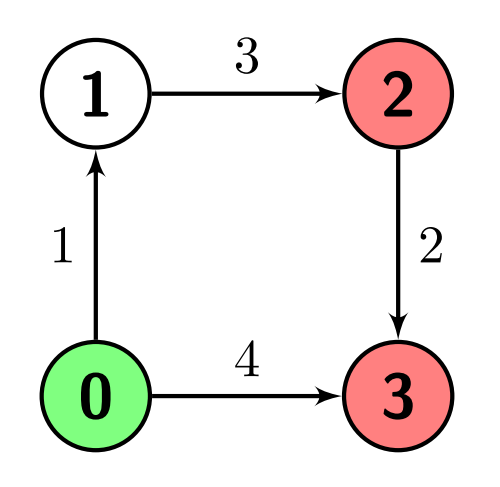
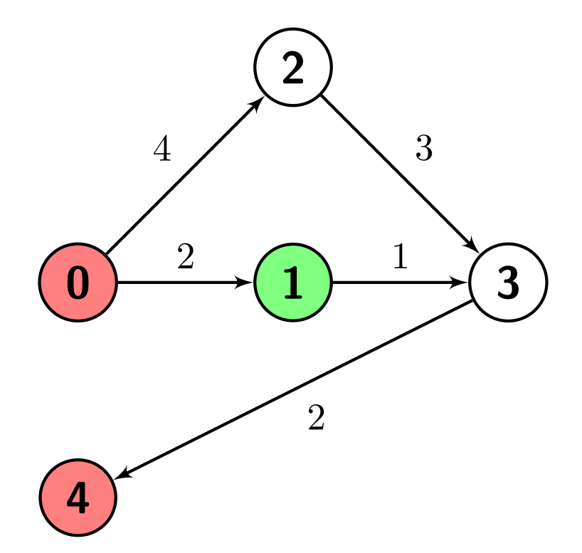
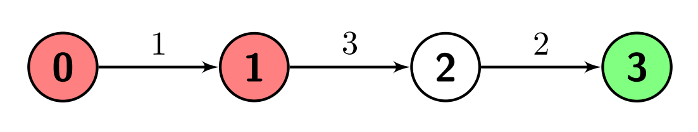

| Category | Difficulty | Likes | Dislikes |
|---|---|---|---|
| Algorithms | Medium | 58 | 6 |
You are given a positive integer n which is the number of nodes of a 0-indexed directed weighted graph and a 0-indexed 2D array edges where edges[i] = [ui, vi, wi] indicates that there is an edge from node ui to node vi with weight wi.
You are also given a node s and a node array marked; your task is to find the minimum distance from s to any of the nodes in marked.
Return an integer denoting the minimum distance from s to any node in marked or -1 if there are no paths from s to any of the marked nodes.
Example 1:
Input: n = 4, edges = [[0,1,1],[1,2,3],[2,3,2],[0,3,4]], s = 0, marked = [2,3]
Output: 4
Explanation: There is one path from node 0 (the green node) to node 2 (a red node), which is 0->1->2, and has a distance of 1 + 3 = 4.
There are two paths from node 0 to node 3 (a red node), which are 0->1->2->3 and 0->3, the first one has a distance of 1 + 3 + 2 = 6 and the second one has a distance of 4.
The minimum of them is 4.
Example 2:
Input: n = 5, edges = [[0,1,2],[0,2,4],[1,3,1],[2,3,3],[3,4,2]], s = 1, marked = [0,4]
Output: 3
Explanation: There are no paths from node 1 (the green node) to node 0 (a red node).
There is one path from node 1 to node 4 (a red node), which is 1->3->4, and has a distance of 1 + 2 = 3.
So the answer is 3.
Example 3:
Input: n = 4, edges = [[0,1,1],[1,2,3],[2,3,2]], s = 3, marked = [0,1]
Output: -1
Explanation: There are no paths from node 3 (the green node) to any of the marked nodes (the red nodes), so the answer is -1.
Constraints:
2 <= n <= 5001 <= edges.length <= 104edges[i].length = 30 <= edges[i][0], edges[i][1] <= n - 11 <= edges[i][2] <= 1061 <= marked.length <= n - 10 <= s, marked[i] <= n - 1s != marked[i]marked[i] != marked[j] for every i != j